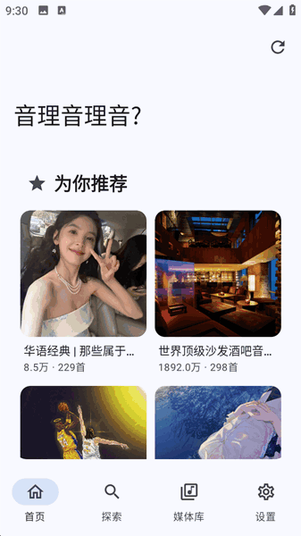
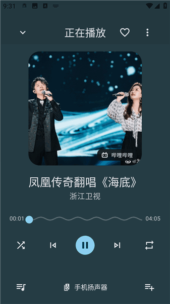

从零上手 NeriPlayer：一个播放器怎么搞定多平台音乐
第一次打开 NeriPlayer 的人很容易在多平台接入和本地管理之间迷失。这篇教程带你从装包到建歌单到设置跳过区间，走一遍完整的使用流程。
读完这篇，你能在手机上装好 NeriPlayer，接入网易云、Bilibili 或 YouTube Music 其中一个账号，完成一次本地歌单创建，并且在 B 站视频上加上一条自定义跳过规则。
准备工作
NeriPlayer 跑在 Android 上，目前只覆盖这个平台——iOS 用户先等等，或者找一台朋友的安卓机试试手感。版本方面，尽量用最新稳定版，老版本的平台接入链路有时候会因为上游接口变动挂掉。安装包直接从NeriPlayer下载拿，不要去第三方应用市场。它的官网上有一份功能清单，可以先扫一眼再决定装不装。
第一次启动时应用会申请存储权限，这里别直接点全部允许然后跳过——如果想让它扫描本地音频，选"选择文件夹"比"全部文件"更安全，只给它放音乐的那一个目录就够了，其他私人文件夹别碰。

第一步：接入你的第一个平台账号
NeriPlayer 有个核心理念叫"账号即能力"——它自己不提供云端曲库，所有搜索、播放、歌单访问的能力都是你自己的第三方账号带进来的。界面里能看到网易云、Bilibili、YouTube Music 三个入口，选你最常用的那个先登进去。
网易云推荐用二维码登录：打开 NeriPlayer 点"添加账号"→ 选网易云 → 屏幕上弹出二维码，手机网易云扫一扫确认就行。这是最稳的登录方式，网页兜底方案在少数老账号上可能卡验证。登录完成后你能看到自己的歌单、收藏夹、推荐列表全部同步进来，搜索和下载按钮也亮了。
Bilibili 走的是同一套流程，Web 登录或二维码都支持。B 站这边的特色是视频合集和分 P 识别——你复制一个视频链接进去，它会尽量保留你选中的那一个分 P，不会默认跳到合集第一 P。
登录完成后先别急着往下走，点进"设置"里的"通用设置"看一眼默认启动页——默认是首页，如果你更习惯直接进媒体库或搜索页，可以在这里改掉，改完即时生效不用重启。
第二步：扫描本地音频，建第一张歌单
接入完在线账号，来处理本地文件。NeriPlayer 支持三种导入方式：系统分享、设备媒体库扫描、授权文件夹定向扫描。如果你手里已经有一批 MP3 或 FLAC，先选"授权文件夹定向扫描"，比全盘扫快得多也干净得多。
扫描完后进"媒体库"，你会看到三个系统歌单："我喜欢的音乐"、"本地文件"、还有你刚扫描出来的目录结构。系统歌单删不掉，这是应用内置的。现在来建一张自己的普通歌单：长按任意一首歌曲 → "添加到歌单" → "新建歌单" → 输入名字确认。建出来的歌单可以随时重命名、排序、删除，删除后还有撤销反馈条给你反悔的机会。
批量插歌的时候有个容易被忽略的细节：可排序歌单支持把选中的歌曲按当前顺序整体插入到指定序号，插入前会弹出预览面板显示前后各 5 首的上下文，确认了才执行——这对整理专辑或合集的时候很好用，不会一不小心把歌单搞乱。
收藏了几首歌之后去"我喜欢的音乐"看一眼，如果你登了网易云，应该能看到"NeriPlayer 的收藏同步"这个选项——打开它，本地收藏的歌曲如果能被网易云识别，会自动同步到你网易云的"我喜欢的音乐"里。这是单向的，NeriPlayer 不往网易云推播放历史，因为中心化音乐平台有风控，直接上报历史可能触发异常检测。
第三步：在 B 站视频上设置跳过区间
现在来玩个有意思的。NeriPlayer 对 Bilibili 视频有一套自定义跳过规则——按 BVID + CID 分 P 存，也就是同一个视频的每一个分 P 可以分别设独立的跳过区间。这个功能和社区贡献的 SponsorBlock 是两套独立机制，不冲突，可以同时开。
打开一个 B 站视频到播放页，点更多选项，找到"管理跳过区间"。添加规则时界面上会出现四个辅助定位按钮："设为开始"、"设为结束"、"前后 5 秒"、"播放/暂停"。实际操作的时候，先让视频播放到你想跳过的开头，按下暂停，点"设为开始"；然后拖到想跳到的位置，再按暂停，点"设为结束"。如果差个一两秒，用"前后 5 秒"微调就行。
一个视频可以加多个跳过区间，播放到任何一个起点都会自动跳转。规则存在本地，也支持通过 GitHub 或 WebDAV 同步到另一台设备——换手机的时候不用一条条重设。具体怎么配可以查NeriPlayer文档。

一起听这个模式里有个坑要注意：听众端的本地自动跳过不生效，只有房主端的自定义跳过会应用到整个房间。这是故意设计的，防止房间里每个人跳的位置不一样导致播放状态漂移。开一起听之前记得把你的跳过规则先配好，别等进了房间才发现没生效。
常见卡点
登录成功但搜索结果为空
这种情况八成是登录态丢了。进设置里找到平台管理，把账号登出再重新登一次。网易云用二维码登录一般不会出这个问题，网页兜底方案如果碰到图形验证，记得在浏览器里手动过一下再回到 NeriPlayer。
本地文件扫不出来
先检查存储权限是不是给够了。Android 13 之后系统把媒体权限拆得很细，音频、图片、视频各一项。如果之前只给了"音频"但文件是 .flac 或 .ape 格式，试试换"授权文件夹定向扫描"直接指定目录，比媒体库扫描更靠谱。
一起听里别人听不到我的跳过效果
这不是 bug。一起听期间只有房主端的自定义跳过会应用到整个房间，听众端的本地跳过规则会被暂时关闭。如果你是听众但又想跳过某些片段，只能自己开一个单人房间或者等房主来设置。
往下还能玩什么
NeriPlayer 的设置页里还有一堆值得深挖的项：歌词字号可以独立调封面页和歌词页的，悬浮歌词支持自定义颜色和位置，蓝牙车机有专门的显示模式，音效和倍速是独立章节。这些都是在通用设置里分好组的，直接改即时生效，不用重启应用。跑起来之后再花半小时翻一遍设置页，总能找到几个让你舒服的小开关。
这套资料在 GitHub、Gitee 和 GitCode 三个仓库都能拿到，GitCode 对国内网络环境更友好些，直接访问 GitHub 有时候会慢一点。